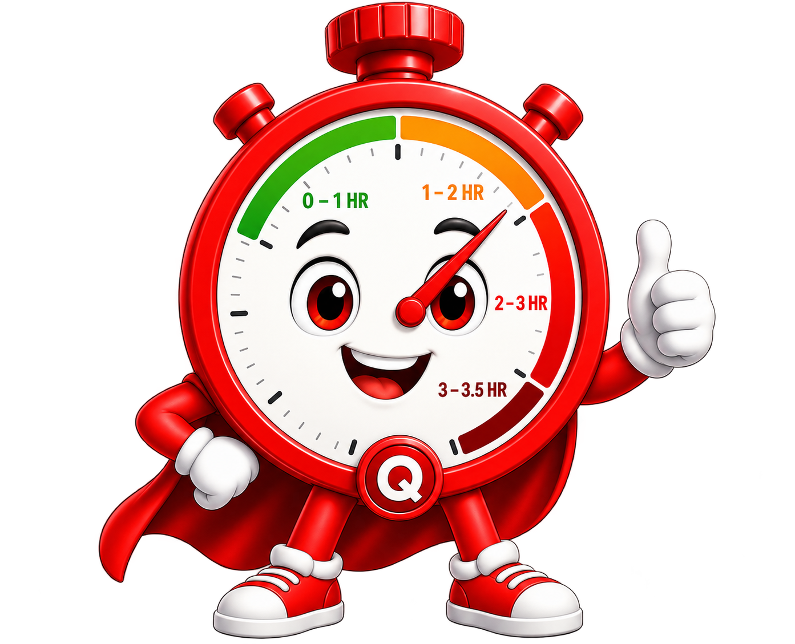

Select Language
HEALTH HERO QUIZ
5
SITUATIONS
2
CHOICES
This is a public awareness tool that helps to recognize, when emergency action may be needed. It does not provide a medical diagnosis. During an emergency situation immediately call 112/108.